Жильё
-
MOLODEZHNAYA HOTEL
Улица Комсомольская, 6
Гостиница «Молодежная» — уютное место в центральной части города Бреста, погружающее своих гостей в атмосферу заботы и комфорта. В шаговой доступности от гостиницы расположены ж/д и авто вокзалы, остановки городского транспорта, центральный рынок, банк, развлекательные и торговые центры, культурные и исторические памятники: мемориальный комплекс «Брестская крепость герой», музей железнодорожной техники, краеведческий музей, академический театр драмы, областная филармония, улица исторических ценностей.
Single одноместный - от 62 BYN/сутки.
Double двухместный - от 86 BYN/сутки.
-
Мини-отель Гоголь
Улица Гоголя, 1 Г
Мини-отель «Гоголь» расположенный в самом центре города – это великолепный формат для тех, кто ищет идеальный компромисс между демократичными ценами и комфортом. По сравнению с другими вариантами в этом городе, гости получают тот же комфорт и сервис, но за меньшую стоимость. Стоимость номеров и мест в отеле варьируется в зависимости от категории номера и периода заезда.
-
Мотель-кемпинг “Старый город”
Улица Луцкая д.3
Первый мотель-кемпинг в черте Бреста «Старый город» находится в десяти минутах езды от границы с Польшей. На охраняемой территории есть большая парковка. Для автокемперов в мотеле имеется 25 стояночных мест, оборудованы по европейским стандартам с подводом электричества, санитарная зона для слива отходов и забора чистой воды. Есть санузлы и душевые кабины. На территории мотеля работает прачечная. Гостям предлагается беседка и мангалы.
Одноместный номер - от 54 BYN/сутки.
Двуместный номер - от 66 BYN/сутки.
-
Гостиница «Буг»
Улица Ленина, 2
Гостиница «Буг»идеально расположена для посещения всех главных достопримечательностей Бреста и региона, включая Брестскую крепость и Беловежскую пущу. Искренне заботясь о комфортном пребывании гостей, мы рады предложить уютные и комфортные номера для проживания. Интерьеры выполнены в современном стиле и привлекают своей атмосферой спокойствия. В каждом номере есть все необходимое для полноценного отдыха. Из окон гостиницы открывается вид на парк и главную улицу Ленина. Визитной карточкой гостиницы является тематический номер В.С. Высоцкого, где не раз останавливался всеми любимый бард - музыкант.
Одноместный номер - от 76 BYN/сутки.
Двуместный номер - от 109 BYN/сутки.
Достопримечательности
-
Брестская крепость
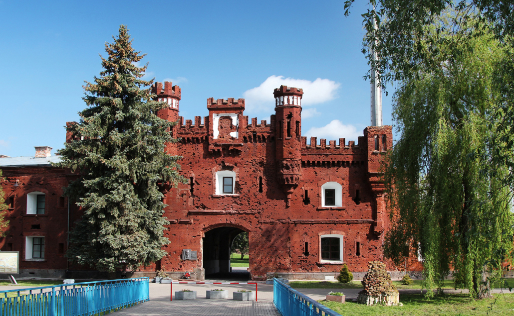Местоположение: ул. Героев обороны Брестской крепости 60
Брестская крепость — одна из наиболее известных достопримечательностей Беларуси. В конце XVIII в. Брест вошел в состав Российской империи, и в 1836—1842 гг. для защиты западных рубежей в нем на месте старого города была построена крепость. Она стала важным участником Первой и Второй Мировой войн. В 1941 г. ее защитники проявили исключительное мужество, в течение месяца отбивая противника. В 1971 г. среди развалин крепости открылся посвященный этим событиям мемориальный комплекс.
Зайдя в Брестскую крепость, слева вы увидите скульптуру «Жажда» — острая нехватка воды знойным летом стала одной из трудностей обороны. По центру крепости за ней виднеется главный монумент крепости — «Мужество». Перед ним располагаются Вечный огонь и руины здания Инженерного управления, совсем рядом на 104.5 м поднимается знак победы — штык-обелиск. В самом конце, за Свято-Николаевским собором у Тереспольских ворот находится Памятник пограничникам.
Обо всех событиях июня 1941 г. вы узнаете, пройдя в Музей обороны Брестской крепости, что расположен справа от входа за руинами церкви Святых Петра и Павла монастыря базилиан. Его смысловым продолжением является «Музей войны — территория мира», расположенный в здании Кольцевой казармы на южной стороне крепости. Здесь говорится о судьбах защитников, признании их подвига и крепости в художественных произведениях. В этой же части расположена экспозиция «Летопись Брестской крепости» о строительстве и модернизации цитадели.
-
Музей «Берестье»
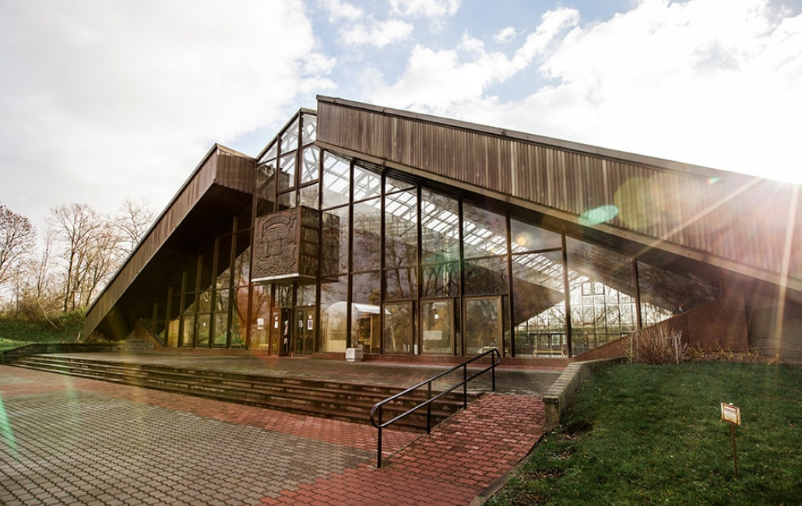Местоположение: Крепостной пр. 15
На территории Волынского укрепления Брестской крепости, на слиянии рек Мухавец и Западный Буг находится музей «Берестье», филиал Брестского краеведческого музея, и еще одно место, куда обязательно стоит заглянуть туристу в Бресте. Музей создан в 1982 г. на месте раскопок восточнославянского города XI—XIII вв., проведенных в 1970-х гг., и вмещает уникальный по сохранности и богатству археологический памятник.
Здание музея «Берестье» — большой стеклянный павильон, очертаниями напоминающий древнее жилище и раскрытые недра земли. В самом центре под крышей расположились три десятка домов, открытых на раскопках, а по периметру найденные здесь артефакты — предметы быта, орудия, оружие, украшения. Среди них, например, деревянный гребень с буквами кириллицы.
-
Музей 5-й форт
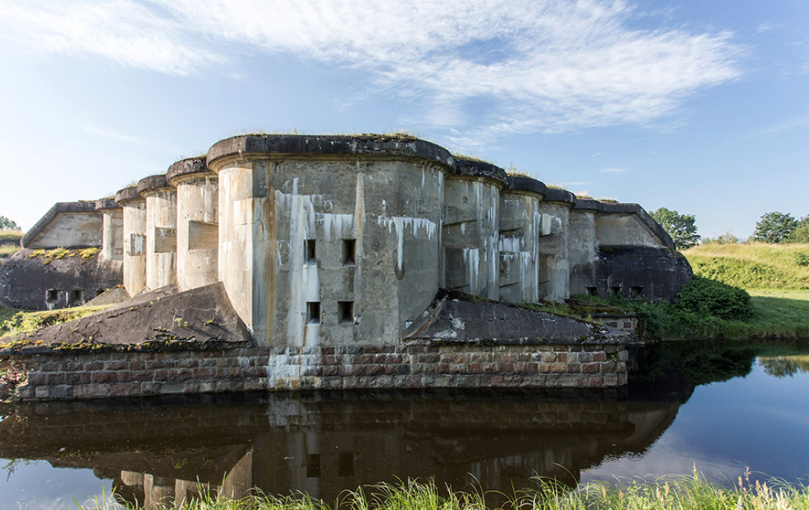Местоположение: В нескольких километрах южнее Брестской крепости
Форт № 5 — один из первого пояса фортов, укреплений, построенных по периметру крепости в 1880-х гг. Как один из наиболее сохранившихся сегодня он входит в музей «Брестская крепость-герой». В шести залах форта-музея размещаются экспозиции об истории и традициях строительства фортов в Европе, о роли Брестской крепости в комплексе всех укреплений Российской империи, о самом форте № 5 и связанных с ним событиях. Также представлены реконструкции помещений, в которых проходила жизнь и служба военных прошлых лет.
-
Аллея фонарей
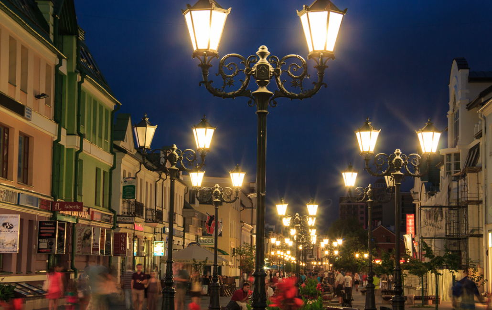Местоположение: улица Гоголя
В средней части улицу Советскую в Бресте пересекает улица Гоголя. На всем ее протяжении размещается Аллея фонарей, созданная на средства городских инвесторов в 2013 г. Четыре десятка фонарей не просто стандартные столбы с лампочками. Каждый из них создан по определенному сюжету, потому интересен и уникален. Здесь можно увидеть фонарь-печь, стоящий у стола с яствами, фонарь-скрипичный ключ или фонарь-ангел. Некоторые представляют иллюстрацию литературных произведений Н. В. Гоголя: «Носа», «Вечеров на хуторе близ Диканьки» и даже сожженный 2-й том «Мертвых душ».
Кроме фонарей на пересечении улиц Гоголя и Ленина можно увидеть Межевой столб — старинный знак, отмечающий границу крепости и города в период с 1836 г. по 1915 г.
-
Брестский краеведческий музей
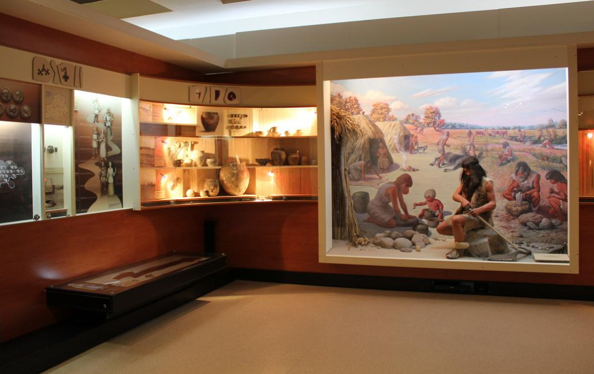Местоположение: улица Карла Маркса,60
На улице Карла Маркса в здании начала XX в. находятся основные экспозиции Брестского краеведческого музея, созданного в 1950-е гг. С помощью подлинных находок, реконструкций и диорам он знакомит с историей брестской земли от момента, который только может охватить история, до XX—XXI вв.
Экспозиционные залы музея разделены по периодам. Первые посвящены первобытным культурам и средневековым событиям, другие нахождению Бреста в составе Великого княжества Литовского и Речи Посполитой, еще одни — хронике в годы принадлежности Российской империи, Польши и затем Беларуси. Часть музея также открывает природу края.
-
Брестский парк культуры и отдыха
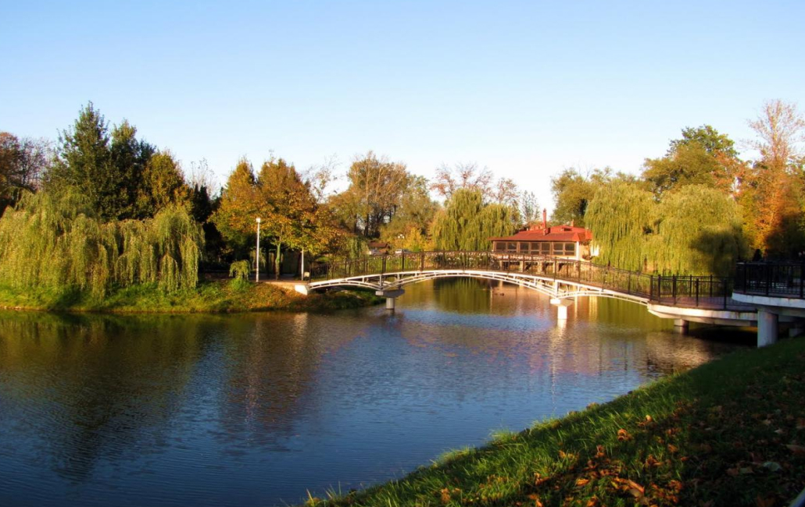Местоположение: улица Ленина, 3
Парк культуры и отдыха Бреста находится в центре города, между Брестской крепостью и железнодорожным вокзалом. Он был разбит в 1906—1912 гг., в советские годы носил название ПКиО имени 1 Мая. Парк украшен скульптурами и мостиками, ухожен и располагает к прогулке. На территории имеется два озера — Верхнее и Нижнее. По центру первого на острове располагается скульптура «Девушка с флейтой», второй обозначен домиком для уточек.
Для детей в парке оборудованы детские площадки. Работает уголок живой природы, где можно познакомить ребенка с оленями, козами, енотами, фазанами, павлинами. Для взрослых и детей предлагаются аттракционы, прокат катамаранов летом и прокат коньков, лыж, финских саней зимой. Проголодавшихся ждут несколько кофеен и кафе.
-
Памятник Тысячелетия Бреста
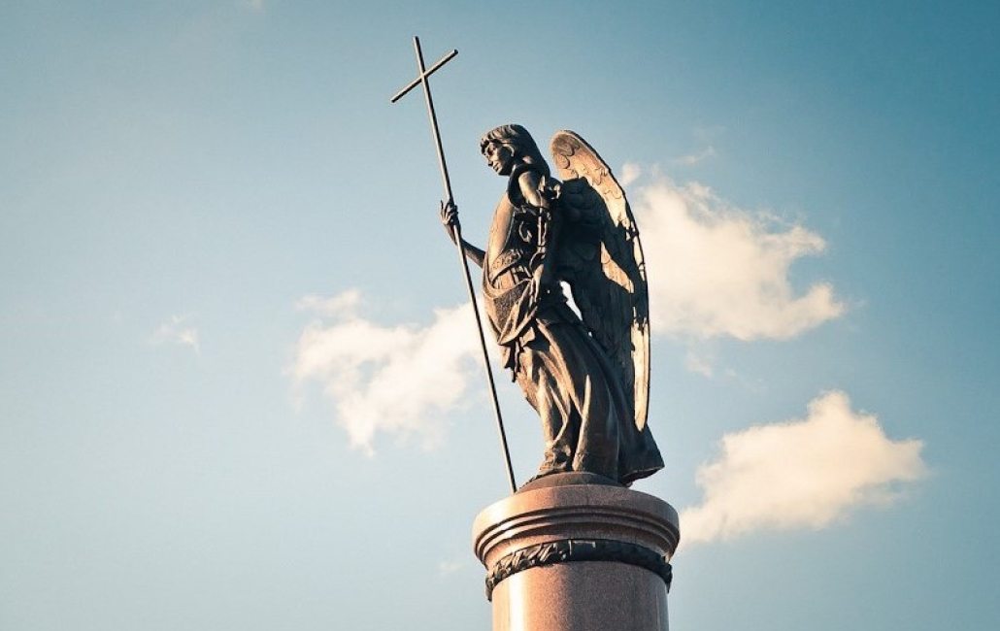Местоположение: улица Советская, 53
В 2009 году Брест отпраздновал свое тысячелетие. В честь этого, благодаря добровольным пожертвованиям жителей, на месте пересечения улиц Гоголя и Советской был возведен Монумент тысячелетия Бреста. В проекте памятника предлагалось использовать городскую модель, которая должна была изображать конкретные персонажи истории (князя Владимира Васильковича, великого литовского князя Витовта, Радзивилла и Николая Черного) и абстрактные лица горожан (солдата, летописца, матери). Однако позднее монумент принял совсем другой вид и стал представлять собой круговой горельеф 15-метровой высоты и 11 квадратных метров площадью. Он был открыт в апреле 2011 года.
Внешний вид памятника поражает своей масштабностью. Все его фигуры помещены под сенью Ангела-Хранителя. А вместо первоначально задуманных абстрактных и исторических героев, на монументе нашли свое отражение сюжеты легенд и реальных событий. Здесь можно увидеть повествование об основании и возведении города, бой берестейцев при Грюнвальде, издание в XVI веке знаменитой Берестейской Библии. Также памятник отражает героическую оборону Брестской крепости в 1941 году и сюжеты освоения Космоса. Однако без неприятных ситуаций на презентации памятника не обошлось. Это случилось ввиду большой сложности элементов монумента. В исполнении надписей авторы допустили 75 орфографических ошибок.
-
Брестский железнодорожный музей
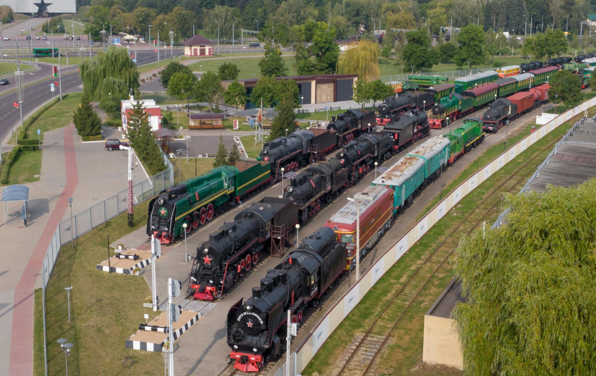Местоположение: проспект Машерова, 2
Через дорогу напротив главного входа в Брестскую крепость можно найти Брестский железнодорожный музей, открытый в 2002 г. Музей показывает историю развития парка техники Белорусской железной дороги и включает крытую и открытую экспозицию.
В здании вы найдете модель железной дороги с движущимися поездами, а под открытым небом обнаружите ряд старинных вагонов. В некоторые можно забраться, погулять по вагону и посидеть на месте машиниста, что понравится не только детям, но и взрослым. Часть моделей представлена в разрезе, позволяя увидеть механизмы машин и узнать основные принципы работы. С детьми здесь можно провести не один час, потому весьма кстати будет работающее в музее кафе.
-
Зимний сад
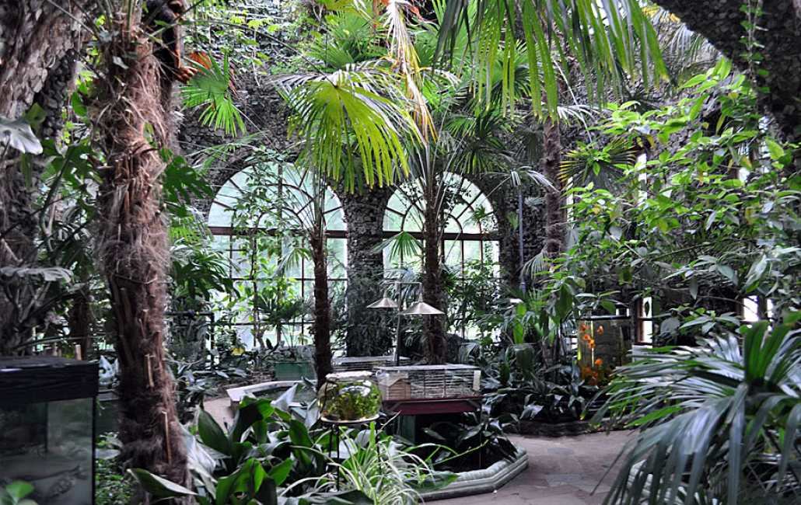Местоположение: улица Мицкевича, 28/1
В Бресте у старого здания государственного университета имени Пушкина расположен учебно-методический комплекс «Зимний сад». Первый этаж Зимнего сада разделен на три условные климатические зоны. Переступая порог, мы попадаем в тропики, где растут красивые папоротники и орхидеи. Успокаивающая и чарующая атмосфера благоприятно влияет на душевное состояние. В краю субтропиков удивляют зреющие плоды лимонов и гранатов. В зоне пустыни мы обратили внимание на гавортии, гастерии, агавы, молочаи и разнообразные кактусы. Сразу видно, что уход за живой частицей природы требует знаний, ответственности и стараний. Это под силу только творческому и усердному коллективу, который трудится в стенах этого заведения. А самое главное, эти люди обладают стремлением донести до нас знания о природе максимально понятно, просто и красиво.
Кафе
- 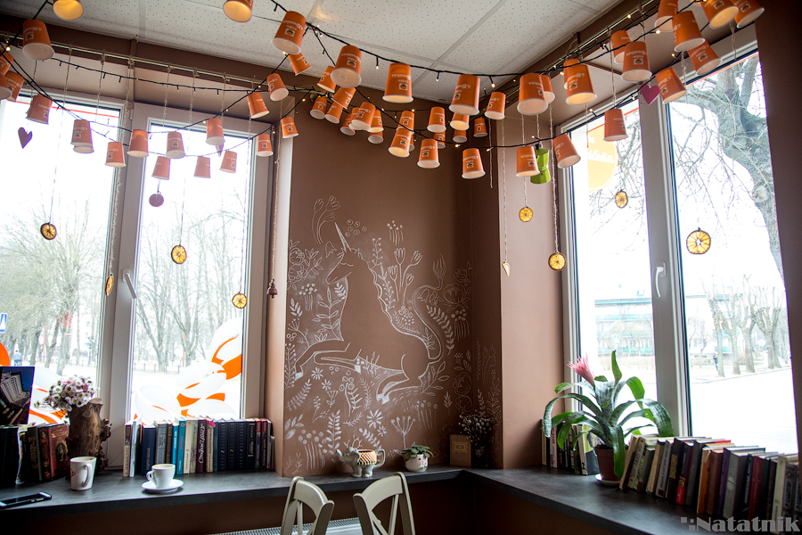
-
Cafes la Brasilena
Крошечный и очень симпатичный кофейный бар с отличным кофе и чаем на любой вкус и цвет, который тебе здесь нальют в стаканчики со смешными рисунками
Улица Гоголя 11
-
BOTANIC BAR
Здесь можешь выпить оригинальный итальянский Illy, больше в Бресте его нигде не попробуешь. Но фишка заведения – в 40 видах чая: классического, травяного, китайского. В кафе проходят выставки и очень зелено, чувствуешь себя, будто в оранжерее.
Площадь Свободы, 10
Средний чек: 30-35 рублей
- 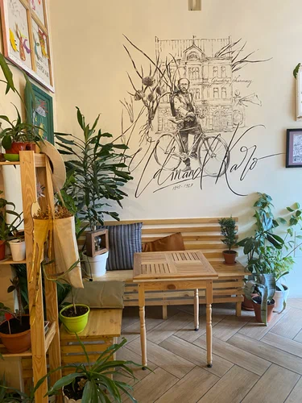